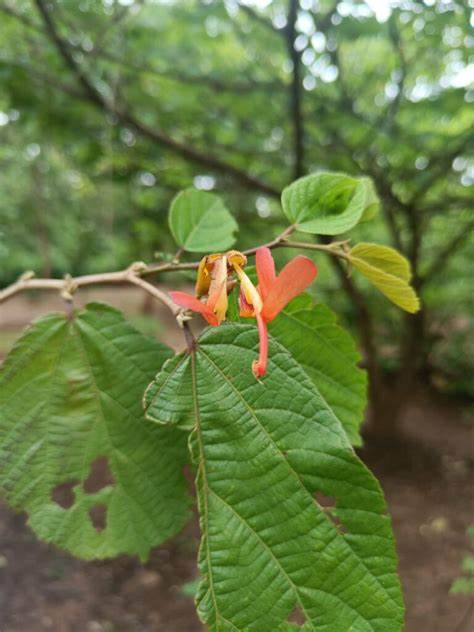

Basonym of Drug
Aavartani
Main Synonym
- Aavartaphala
- Aavartamala
- Murva
Regional Name
- Bengali: Aarmora
- Gujarati: Mardasingi, Mardasing
- Hindi: Marodafali, Ainthani, Gomathi
- Marathi: Keavana
- Tamil: Balamburi
- Telugu: Adamati
- English: Indian Screw Tree
Botanical Name
Helicteres isora Linn
Family
Sterculiaceae
Classification (Gana)
- Bhavprakash Nighantu: Guduchyadi Varga
- Kaiyadeva Nighantu: Aushadhi Varga
External Morphology
A small tree
Useful Parts
Important Phytoconstituent
- Isorin
- Isocucurbitacine
- Cucurbitacine
- Diosgenin
Rasa Panchak
Rasa: Kashaya
Guna: Laghu, Ruksha
Virya: Shita
Vipaka: Katu
Action
Kaphapittahara
Therapeutic Indication
- Deepen (appetizer)
- Raktapittahara (treat bleeding disorder)
- Krimighna (anti-helminthic)
- Atisarahara (anti-diarrheal)
- Grahanihara (anti-dysenteric)
- Kusthaghna (treat skin diseases)
Therapeutic Uses
- Udarshoola - Fruit and root powder with water is beneficial in stomach aches.
- Prameha - Bark decoction is also useful in diabetes.
- Kandu - Fruit paste is applied over the skin area of itching.
Dose
- Bark /seed powder: 1-3 gm
- Decoction: 40-80 ml
Formulations
-
Adverse Effect
Not Known
Remedial Measure
Not required
Purification
Not required